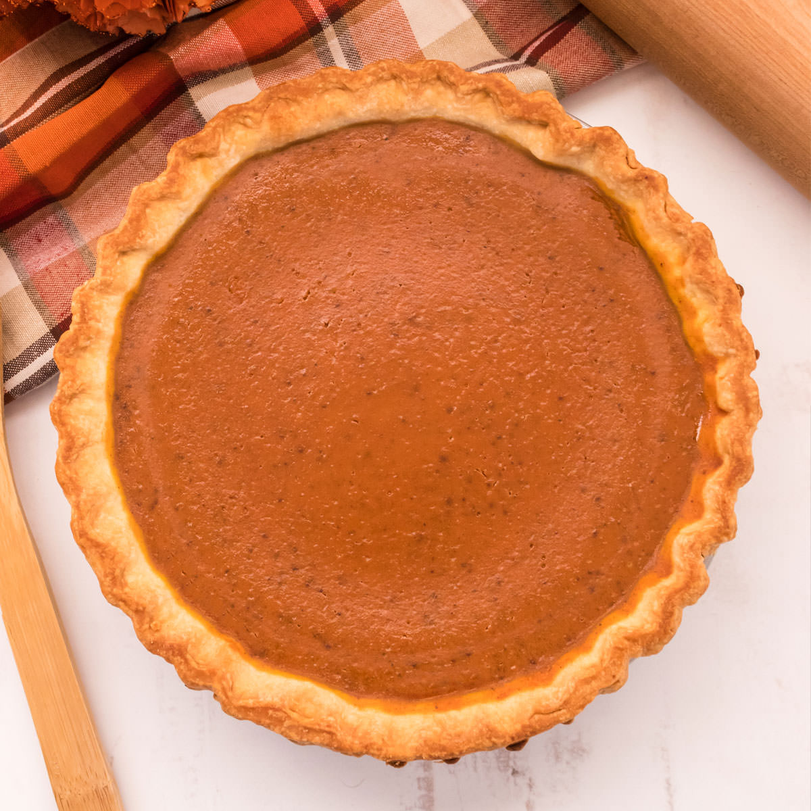

Cinnamon Whiskey Pumpkin Pie

Do you love booze?
Rhetorical question, of course you do. So let's put it in your pie.
Spike the desert and spoil gramma's 50 years of sobriety!
Ingredients
- 9-inch pie crust
- 30 oz pure pumpkin
- 18 oz Evaporated Milk
- 4 eggs
- 1.5 cups sugar
- 1 tsp salt
- 1 tsp ground ginger
- .5 tsp ground cloves
- 6 oz cinnamon whiskey (we used Fireball)
Directions
- Preheat oven to 325. Farenheit. 'Murica.
- Whisk eggs in a mixing bowl
- Combine sugar, salt, ground ginger, ground cloves,
pure pumpkin, evaporated milk, and cinnamon whiskey
- Whisk ingredients together
- Fill pie crust with filling
- Bake for 30 min, then rotate
- Bake for another 45 min, or until toothpick inserted in middle
comes out clean
- Profit